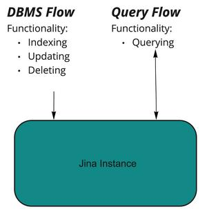
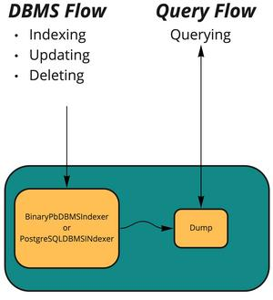
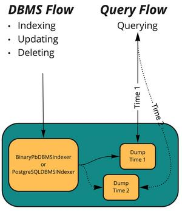

Rolling Updates and Query While Indexing in Jina¶
In this section, you will learn how to configure Jina to allow queries while indexing¶
Overview¶
Querying while indexing refers to the capacity of still being able to search your system while data is simultaneously being written to it. Within Jina this is possible using the rolling updates feature. This means you can have two Flows running at the same time, one for DBMS-type operations (adding, updating, deleting data) and one for searching (querying). The two systems communicate with each other using a system of rolling update calls to the respective Flows.
Section |
Purpose |
|---|---|
DBMS and Query Indexers |
Understand the two Flows you will need |
Dump-Reload |
The methods for interacting with the Flows |
Replicas |
Configuration needed for uptime |
JinaD |
Remote Flows |
Example |
Link to a pre-configured Jina application |
DBMS and Query Indexers¶
As part of this feature, we provide two types of indexers:
The DBMS (Database Management System) indexers store both the
embedding and the Document’s metadata as one entity (as compared with
the existing Indexers, which store either, but not both). These
provide index, update, and delete methods. They should be
part of your Indexing Flow, and function as normal Indexers.
At the moment we provide two such indexers, with more to come:
BinaryPbDBMSIndexer, which stores the data in its workspace on disk (part ofJina core)PostgreSQLDBMSINdexer, which uses the PostgreSQL database system as its storage system. Can be found in Jina Hub
The Query indexers are write-once indexers that are used only
for querying data. Write-once means that the data is only written
to the indexer once, at initialization time. After that, you can only
issue search requests to it. In order to re-build it with new data,
you need to use the .rolling_update method.
Dump-Reload¶
The Flow object provides two methods, .dump and .rolling_update,
for configuring the rolling updates.
.rolling_update should be called on the Query Flow, with the name of
the Pod where the Indexer resides, and the path from which to read. The
method then shuts down the indexers in the Flow sequentially, and
instructs them to start again, but with the new data from the location
provided.
with flow_query:
flow_query.rolling_update('indexer_query', dump_path)
.dump should be called on the DBMS (Indexing) Flow, with the name of
the Pod where the Indexer resides, which path to dump to, and how many
shards
you have in your Query Flow.
with flow_dbms:
flow_dbms.dump('indexer_dbms', dump_path=dump_path, shards=shards)
The method then extracts the data from the DBMS Indexer and stores it in the specified location, prepared to be read by Query Indexers.
You can see a graphical representation of the process:
Replicas and rolling updates¶
Replicas are, like the name suggests, duplicates of a specific Pod. They
are parallel, so a query request will have polling: any between the
two of them. These are required on the Query Flow side in order to
maintain availability during the .rolling_update call. You need to
make sure that you have at least 2 replicas configured for your Query
Indexer. This way, when one is taken offline for reloading, the other
one is still alive and serving results.
This can be configured via the Python API, or in the YAML of the Pod:
...
pods:
- name: indexer_query
uses: indexer_query.yml
replicas: 2
...
You can see a graphical representation of the rolling update process below:
In this graphic Dump Time 1 and Dump Time 2 represent the inner state of the two replicas. One is serving data from Time 1 (with continuous line), while the other is being reloaded with new data (from Time 2, dotted line).